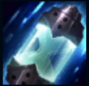
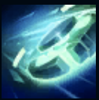
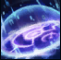
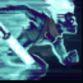
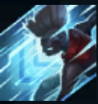

PASSIVE
Z-DRIVE RESONANCE:
Ekko's Zero-Drive charges his spells and attacks with temporal energy. The third hit deals bonus damage
and, if the target is a champion, Ekko gains accelerated movement speed.

Q
TIMEWINDER:
Ekko throws a temporal grenade that expands into a time-distortion field upon hitting an enemy champion,
slowing and damaging anyone caught inside. After a delay, the grenade rewinds back to Ekko, dealing
damage on its return.

W
PARALLEL CONVERGENCE:
Ekko's basic attacks deal bonus magic damage to low health enemies. He can cast Parallel Convergence to
split the timeline, creating an anomaly after a few seconds that slows enemies caught inside. If Ekko
enters the anomaly, he gains shielding and stuns enemies by suspending them in time.

E
PHASE DIVE:
Ekko rolls evasively while charging up his Z-Drive. His next attack deals bonus damage and warps
reality, teleporting him to his target.

R
CHRONOBREAK:
Ekko shatters his timeline, becoming untargetable and rewinding to a more favorable point in time. He
returns to whenever he was a few seconds ago, and heals for a percentage of the damage received in that
duration. Enemies near his arrival zone take massive damage.